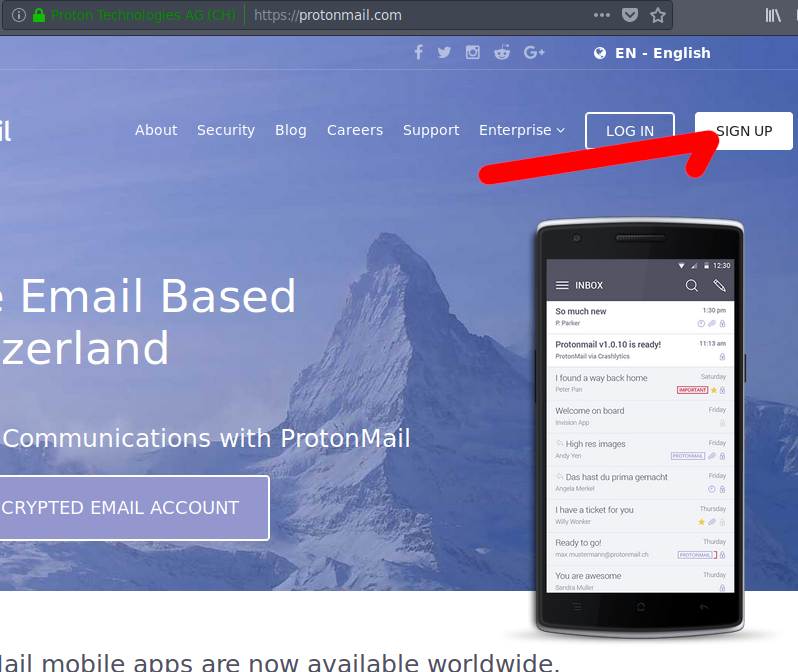
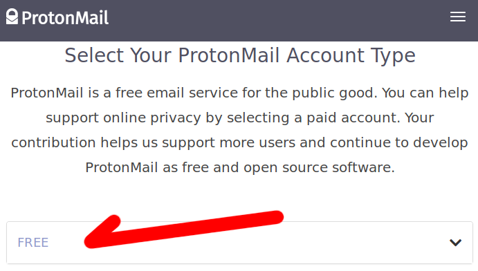
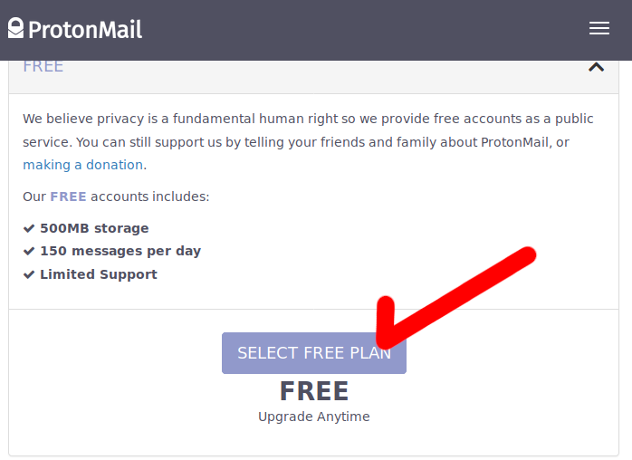
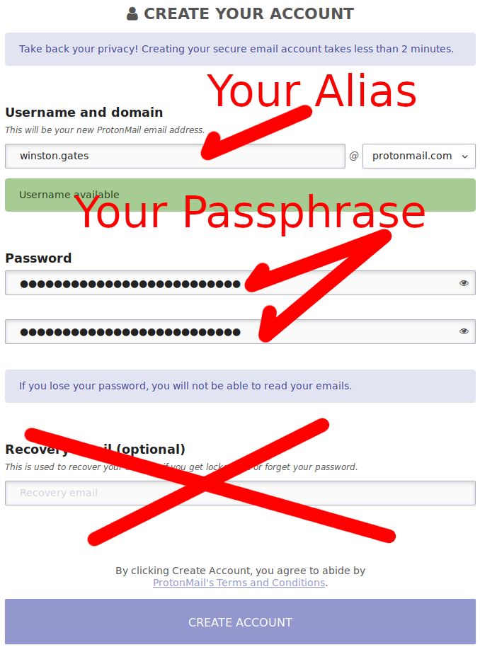
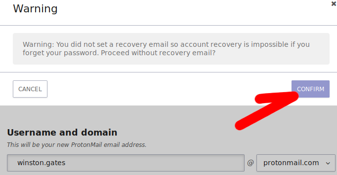
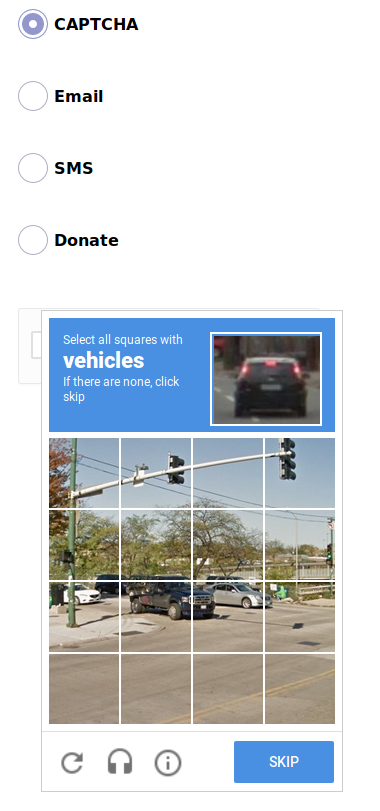
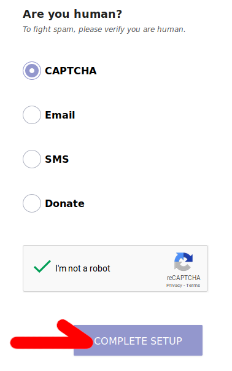
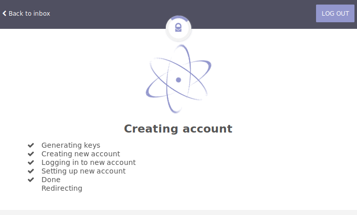
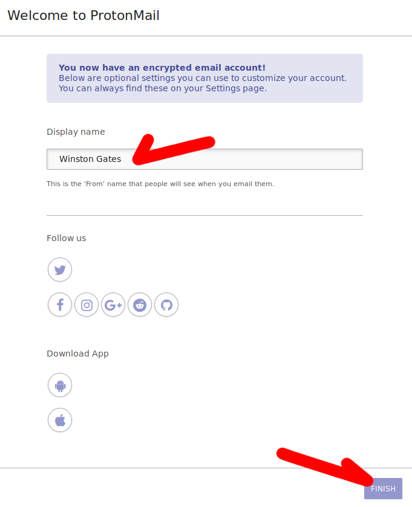

A burner email account is an account that you can use to sign up for other services, which you prefer not to give your real name or contact information to.
ProtonMail is one of the few remaining services which allows new users to sign up for an account without handing over any personal identifiable information (PII). We'll be using the Aliases we created earlier to create our burner accounts.
So let's head over to the ProtonMail website, at the top right of the splash page you'll see a button that says sign up, go ahead and click that.

This should get you an accordian menu with different levels of accounts, as we are not planning to pay for anything today, click on the "free" box to open that part of the menu.

Click select free plan.

Now we're going to make use of that alias, fill in the username field as though the alias were your real name and you're trying to make the email easy for your friends to remember. If your username is not available in its simplest form, add a number or some punctuation, or remove the punctuation. Below I have added a period to make my username unique.
Create a secure passphrase, just like we learned in class yesterday, one you can remember but that is long. ProtonMail encrypts your data, so if you forget this password, the account will not be recoverable.
Do not input a recovery email. We do not want this account to be tied to our real identity in anyway. Including anything you've done before today in the creation of this account creates history, which makes it closer to you.
When you're done, click the "CREATE ACCOUNT" button at the bottom.

Now ProtonMail is going to ask you to verify that you understand that because you have not entered a recovery email you'll be out of luck if you forget the passphrase you typed. Click confirm.

Time to prove you're a human, select the CAPTCHA, all of the other options will give ProtonMail information we don't want them to have. Does it bother anyone else that we now have self driving cars, yet the ultimate test of not being a robot is your ability to identify cars in a picture...

When you've validated your humanity hit "COMPLETE SETUP"

Note that ProtonMail is now encrypting yoru data with newly generated keys.

Last step, you'll want to set the display name to be in step with your alias so go ahead and put your alias in here. DON'T HIT ANY OF THE ICONS these will link your real twitter, facebook, etc to ProtonMail and you're alias will be compromised. Also DON'T DOWNLOAD THE APP this also leaks your identity to ProtonMail.

Congratulations, you have an anonymous burner account!